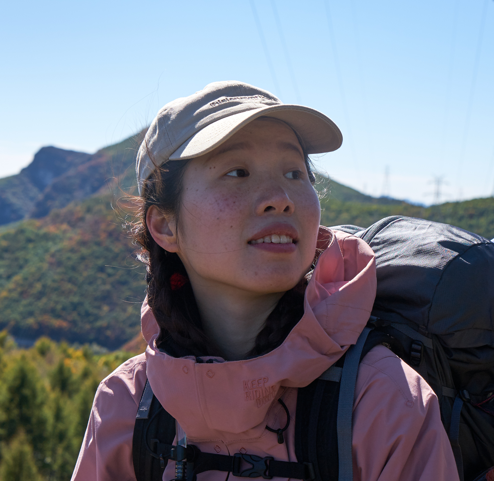

Cheng Jiang (蒋 程)¶

jiangcheng21@mails.ucas.ac.cn
School of Humanities
University of the Chinese Academy of Sciences (UCAS)
Beijing, China
Research Interest: Science Communication
Education¶
Ph.D. candidate in Philosophy of Science and Technology
2021/09 - now: School of Humanities, UCAS
M.S. in Science Communication
2018/09 - 2021/06: School of Humanities, UCAS
B.S. in Accounting
2014/09 - 2018/06: Schoole of Business, Chengdu University of Technology
Research Works¶
-
Public Attitudes to Mental Illness in Comments on Social Media
-
The Effect of Youth College Science Camp on Science Interest
-
The Development of Science Popularization in the PRC
-
Science Projects Popularization Transformation of National Natural Science Foundation of China
Internship¶
Deputy Head of Students Press Crops of UCAS (2018/09 - 2021/05)
Published more than 20 scientists and labs interview articals
Volunteer of Sichuan Province Library (2016/09 - 2019/10)
Ofer media services for reader activities and science lectures (like Jane Goodall's lecture)
Minister of Media Sdudio of Chengdu University of Technology (2015/09 - 2017/06)
Operate and manage the content of school's social medias Edit school monthly brochure
Awards¶
2021: University Scholarship, UCAS
2020: Excellent Student Leader, UCAS
2017: The 3rd Prize of Sichuan Sand Table Simulation Competition
Publications¶
-
蒋程,詹琰,王伟,茅羽佳 & 王聪.(2021).青少年高校科学营对科学兴趣的影响研究. 科普研究(02),92-99+112. doi:10.19293/j.cnki.1673-8357.2021.02.011.
-
詹媛 & 蒋程(2022-02-17).14种新冠疫苗从这里走向临床.光明日报,004. doi:10.28273/n.cnki.ngmrb.2022.000798.